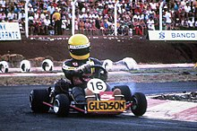

Introdução
Ayrton Senna da Silva foi um dos maiores e mais carismáticos pilotos de Fórmula 1 de todos os tempos. Nascido em 21 de março de 1960, em São Paulo, Brasil, Senna demonstrou desde cedo uma habilidade excepcional ao volante, começando sua carreira no kart ainda na infância. Seu talento rapidamente o levou para o cenário internacional do automobilismo, onde ele se tornou uma lenda. Conhecido por sua velocidade, precisão e determinação, Senna conquistou três campeonatos mundiais de Fórmula 1, em 1988, 1990 e 1991, e é lembrado por suas performances extraordinárias, especialmente em condições adversas de corrida.
Além de suas realizações nas pistas, Ayrton Senna é celebrado por seu profundo senso de justiça e seu trabalho filantrópico. Fundou o Instituto Ayrton Senna, uma organização dedicada a melhorar a educação e o desenvolvimento de crianças e jovens no Brasil, garantindo que seu legado vá além do automobilismo. Sua trágica morte em um acidente durante o Grande Prêmio de San Marino em 1994 não apenas chocou o mundo, mas também trouxe mudanças significativas para a segurança na Fórmula 1, salvando inúmeras vidas nos anos seguintes.
Senna continua a ser um ícone cultural e um símbolo de excelência esportiva, inspirando novas gerações de pilotos e fãs de automobilismo ao redor do mundo. Sua vida e carreira são um testemunho de paixão, perseverança e compromisso com a excelência, fazendo dele um dos esportistas mais queridos e respeitados da história.
Carreira
Senna começou sua carreira no kart, onde já mostrava seu talento excepcional. Em 1984, fez sua estreia na Fórmula 1, competindo por equipes como Toleman, Lotus, McLaren e Williams. Durante sua carreira, ganhou três campeonatos mundiais e é lembrado por suas habilidades em pistas molhadas e por suas intensas rivalidades, especialmente com Alain Prost.
Principais Conquistas
| Conquista | Ano |
|---|---|
| Campeão Mundial de F1 | 1988 |
| Campeão Mundial de F1 | 1990 |
| Campeão Mundial de F1 | 1991 |
Legado
Além de seu sucesso nas pistas, Senna é lembrado por seu patriotismo e filantropia. Ele fundou o Instituto Ayrton Senna, que continua seu trabalho ajudando crianças e jovens no Brasil. Seu trágico acidente em 1994 no Grande Prêmio de San Marino levou a melhorias significativas na segurança do automobilismo.
Senna continua a ser um ícone cultural no Brasil e em todo o mundo, simbolizando excelência, determinação e compaixão.
Atualidade
A empresa Netflix anúnciou que estréia ainda esse ano (2024) uma minissérie contando sua história.